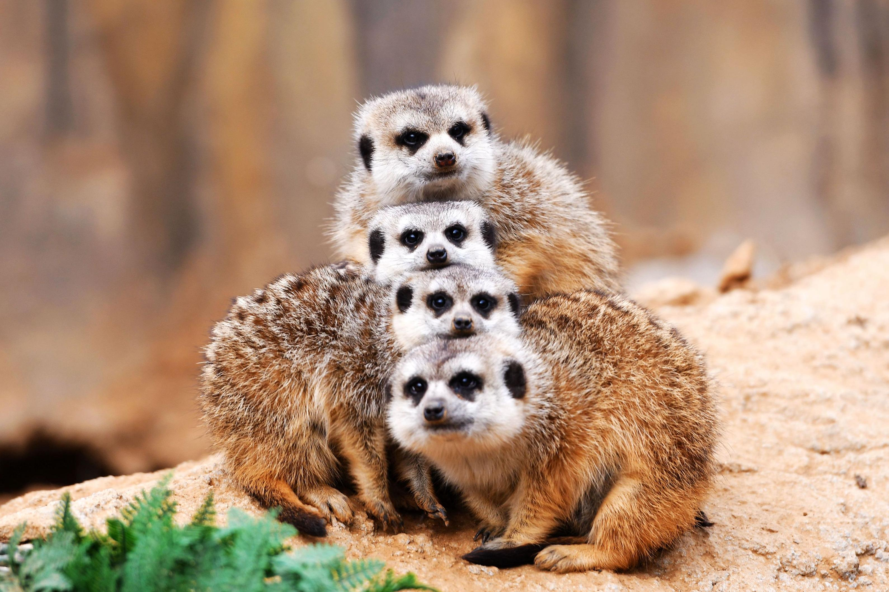
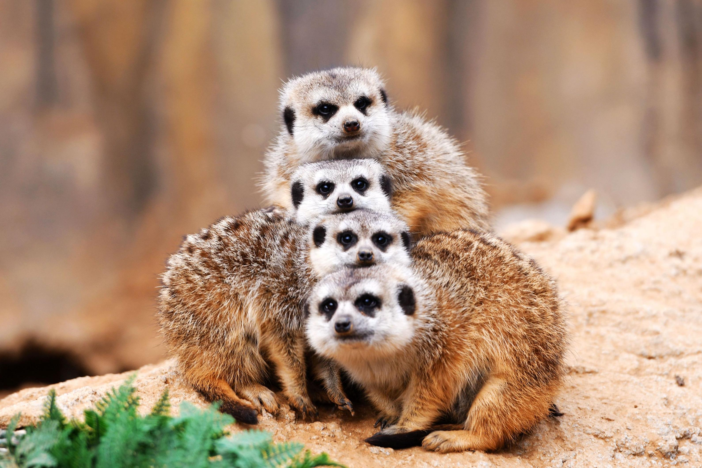

Fun facts about Meerkat according to natgeokids.com
Top speed: 32 km/h
Diet: Omnivore: beetles, caterpillars, spiders, and scorpions. They’ll also eat small reptiles, birds, eggs, fruit and plants.
Habitat: Desert
Meerkats only go outside during the daytime.
Meerkats dig safe places called bolt holes throughout their foraging area, where they can hide in an emergency.
Click on the link to watch the Meerkat video